4 FREEFORM 2: SIX OTHER OPTIONS TO PLAY WITH
4.1 Prettifying a graph
So we made some graphs, but they’re lacking finesse. ggplot provides many ways to customise its appearance to make it more presentable. In this option, we’ll look at some of the most common functions used to do this. So here’s the plot we were just working on, for reference - but feel free to go and grab code for the earlier plots if you’d prefer. This will all apply to those too.
Here we’ll look at the top and bottom local authorities’ wage multiple (excluding Kensington and Chelsea, as we did before).
Note: this section uses the same price_n_wage dataframe from the section on merging. If you’ve done the facet option before this one, you may have over-written it. If so, here’s a quick option to reload. (Or run the code for that section again, whichever you prefer.)
#reload price_n_wage data we previously made, if it's been over-written with anything
price_n_wage <- readRDS('data/price_n_wage_fromjoinsection.rds')
price_n_wage2018 <- price_n_wage %>%
filter(year == 2018) %>%
arrange(-wagemultiple)
#choose whichever zone selection option you want. Here's the previous three.
#zoneselection <- price_n_wage2018 %>% filter(wagemultiple < 5.78)
#zoneselection <- price_n_wage2018 %>% slice(2:11)
#We'll use this one here.
#Top and bottom five, excluding Kensington and Chelsea
#Use a vector function for multiple selection
zoneselection <- price_n_wage2018 %>% slice(c(2:6,72:76))We’ve already seen how to change the label for the legends using labs and control legend order using fact_reorder - these are included here:
ggplot(price_n_wage %>% filter(Area %in% zoneselection$Area),
aes(x = year, y = wagemultiple, colour = fct_reorder(Area,-wagemultiple))) +
geom_line() +
labs(colour = 'area')The basic principle is to add cumulatively to a ggplot: just add a plus at the end of a line and then include our new tweak on its own line. An advantage of it being on its own line: we can comment out any particular feature easily to play around with the output.
Try any / all of the following. If you want to see them all together, skip ahead a few pages.
- Change the axis labels
The x and y axis labels can be changed with the xlab and ylab functions. So updating the y axis would look like:
ylab('wage multiple')
- Add some better ticks to the y axis scale
You can set any scale ticks completely manually. This can be done by adding a scale_y_continuous function.
scale_y_continuous(breaks = c(0,5,10,15,20,25,30))It’s also possible to over-ride the labels used for those ticks. Be careful to make sure both of these vectors are same length - it needs a one-to-one correspondence:
scale_y_continuous(breaks = c(0,5,10,15,20,25,30),
labels = c('0','5x','10x','15x','20x','25x','30x'))This tells ggplot exactly which breaks we want and how to label them. (The labels can be text or numbers.) So we have very fine control of these.
- Giving the plot a title
I always forget how to do this and need to google it! I invariably copy the code from here and amend it. We add a ggtitle and then make it bold by changing the theme.
The latest ggplot aligns titles to the left by default - you can include an hjust value in theme
ggtitle("House prices as multiple of yearly wage top and bottom five English local authorities") +
theme(plot.title = element_text(face="bold",hjust = 0.5))That’s a stupidly long title. You can wrap lines in the title by using backslash n where the lines should break. It’s hard to spot here: the backslash n is after wage and before top:
ggtitle("House prices as multiple of yearly wage\ntop and bottom five English local authorities")
- Removing axis titles entirely
One might think having the ‘year’ title for the x axis is a bit superfluous: years are self-explanatory. (Many say axes must always be labelled, mind!) Anyway, if you don’t like it, the theme function can again be used. Note here, we’re adding the to theme formatting we did for title above.
theme(plot.title = element_text(face="bold",hjust = 0.5)),
axis.title.x=element_blank())The same can be done with text and ticks using axis.text.x and axis.ticks.x (or y).
- Changing the line type and size
As we did when changing the sales count circles to grey, the line type and size can be altered in the geom_line function directly. Here’s a reference for the linetype number:
0 = blank, 1 = solid, 2 = dashed, 3 = dotted, 4 = dotdash, 5 = longdash, 6 = twodash
geom_line(size = 1, linetype = 5)
- Quickly creating a flag for a new aesthetic mapping
Perhaps you want to mark out which local authorities are in London. All we need for this: a single column marking which of the local authorities are in London. We could then use linetype to mark this.
In the current data, the three London zones are Camden, Islington and Hackney. You could obviously use some more sophisticated way to pick out your group but let’s just make it directly:
londonzones <- c('Camden','Islington','Hackney')We can then use dplyr to make a flag column (with actual labels rather than just a zero and one, as is common with flag columns.)
There’s a new function here: ifelse. As the name suggests, this just lets us say: if this condition is met, do this - else, do that. (That’s the best way to remember the order of the arguments too: `if, then: this, else that’.) We can combine it with the %in% operator.
price_n_wage <- price_n_wage %>%
mutate(inLondon = ifelse(Area %in% londonzones, 'london','other'))As always, take a look at the dataframe to confirm it’s done what you wanted it to. Or throw it into the ggplot and see…
- Bringing all that together
Here’s those options all in the ggplot code - including the new linetype aesthetic mapping. It also hides the inLondon variable name above the linetype legend.
ggplot(price_n_wage %>% filter(Area %in% zoneselection$Area),
aes(x = year, y = wagemultiple, colour = fct_reorder(Area,-wagemultiple))) +
geom_line(aes(linetype = inLondon), size = 1) +
ylab('wage multiple') +
labs(colour = 'local authority', linetype = ' ') +
scale_y_continuous(breaks = c(0,5,10,15,20,25,30),
labels = c('0','5x','10x','15x','20x','25x','30x')) +
ggtitle("House prices as multiple of yearly wage\ntop and bottom five English local authorities") +
theme(plot.title = element_text(face="bold",hjust = 0.5),
axis.title.x=element_blank())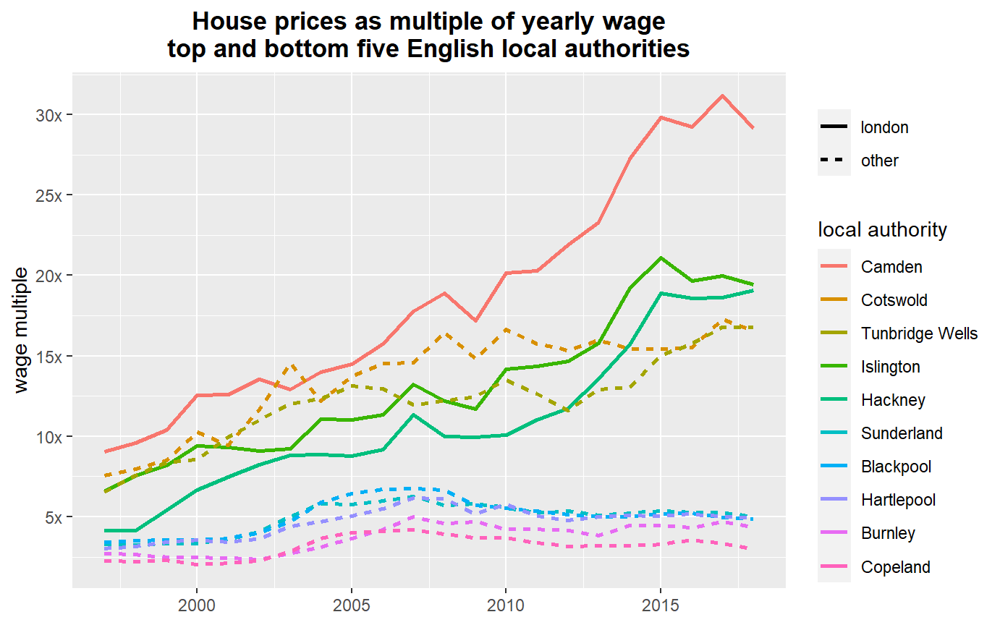
4.2 Facetting and dodging: getting as much info into one graph as humanly possible
There’s a quote about visualisation doing the rounds:
``A designer knows he has achieved perfection not when there is nothing left to add, but when there is nothing left to take away.’’
That’s all very well, but sometimes it’s good to stuff as much information into one chart as possible… This section covers two useful things to help us do this:
ggplot has a rather nice feature called facetting that allows us to put data into separate panels in one plot. As with other mapping of aesthetics, to do this we need one column that will act as our facet category, to split across multiple panels.
The position function in geometries also has a very useful option: “dodge”. We’ve already seen position = “stack”: this stacked mapped variables on top of each other in a bar chart so their counts summed. Instead, dodge places them next to each other.
We’ll also use this as an opportunity to explain a bit more how factors work.
Let’s ask:
How have prices (in terms of wage multiple) of different types of house changed (detached, terraced etc) for a range of years, in four local authorities?
Again, this is the wage data combined with local authority house price data. In case this isn’t already loaded, here’s the code again. Note, we already know the year column will need converting to numeric, so we do that here too.
wages <- read_csv('data/medianWages_localAuthority.csv')
#Make wages into long data, year in its own column
wagesLong <- wages %>%
gather(key = year, value = medianwage, `1997`:`2018`)
#Make year numeric in preparation for the join
wagesLong$year <- as.numeric(wagesLong$year)
#Reload sales at local authority level
sales <- readRDS('data/landRegistryPricePaidLocalAuthoritySelection.rds')
#Add the year column
sales$year <- year(sales$date)As before, we need to make a summary of the house price data - but with an addition. We want average price per year, per place AND per house type. As always, you can just add this to the group_by verb and dplyr will create the grouped data already in long form.
We also initially filter to get just four specific years, two each side of the crash. Each of these will get its own facet.
saleSummary <- sales %>%
filter(year %in% c(2000,2005,2010,2015)) %>%
group_by(localauthority,year,type) %>%
summarise(meanPrice = mean(price))## `summarise()` has grouped output by 'localauthority', 'year'. You can override using the `.groups` argument.We’re now ready to join, as we did before. We use inner_join again: so this will only keep years (and local authorities) common to both, in this case just 2000, 2005, 2010 and 2015.
Because the saleSumary data now has type in long form, the join will repeat values for the joined wages dataframe. Take a look once joined, you can see there are repeated wages for each house type (but unique price averages).
Let’s also add the yearly wage and wage multiple columns here. Note: you could of course join these two separate tasks with the pipe operator. It doesn’t always help with readability though - sometimes it’s better to keep things a little separate.
#See the dataframe: median wage repeated for each year / place
price_n_wage <- inner_join(
wagesLong,
saleSummary,
by = c('year', 'Area' = 'localauthority')
)
#Make new columns
price_n_wage <- price_n_wage %>%
mutate(
medianwageyearly = medianwage * 52, # weekly wage to yearly wage
wagemultiple = meanPrice / medianwageyearly # house price as multiple of that yearly wage
)OK, the data’s ready for plotting. A reminder of the principle here: ggplot wants one column per variable mapping / aesthetic. We do that by using long data. So now we’ve got each of the following in its own column:
- wagemultiple
- Area (the local authority)
- type (the house type)
- year
The only new type of mapping we now do is the facet itself. Here’s another R/ggplot quirk: unlike everything else, this one requires a tilde before the variable name. (Look up facet_grid to see why this is actually useful.)
So let’s try this:
ggplot(price_n_wage %>% filter(Area %in% c('Camden','Oxford','Wirral','Liverpool')),
aes(x = Area, y = wagemultiple, fill = type)) +
geom_col() +
facet_wrap(~year)Hmm. Not quite: the wage multiples are stacked (this is geom_col’s default position - check its help file to confirm), which doesn’t make sense here. They should be side-by-side. Dodge to the rescue! Over-ride geom_col’s default position (remembering the plus for the next line):
geom_col(position = 'dodge')Ah ha! Each value is now side-by-side and makes sense against the y axis. But it would be useful to tell ggplot to place all the facets on one row to make it easier to compare the y-axis between categories. How? Use autocomplete to get your list of facet options. Put a comma after year then press CTRL+SPACE. Use the mouse or cursor: the help tells you how to use ncol, nrow and scales:
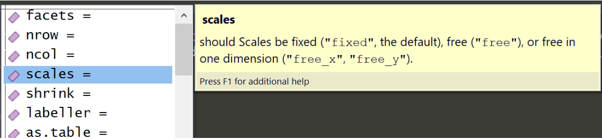
So we can set all the facets on one row with:
facet_wrap(~year, nrow = 1)Starting to look better, but the order and labels for the house type are poor. The order of the local authorities could do with tweaking too.
For this, we need to return to factors and using forcats.
- Recall that ggplot uses factor order for ordering its legends and plots. (Or alphabetical / numerical order if the variables are plain character or number.)
- We’ve already used fct_reorder: this orders a variable by another - we’ve used it to order place names by average house price. But it also converts the variable to a factor in the process as only factors can have a defined order in R.
To see what’s going on, it’s useful to look closer at the variables. The current type variable is a plain character:
class(price_n_wage$type)## [1] "character"The first thing we’ll do is use forcats to recode the names to something more readable. We’ll make a new variable, type2, so we can compare the difference: in practice we’d usually overwrite the original.
Using mutate to carry out the recode, we make a new type2 variable from the old type:
price_n_wage <- price_n_wage %>%
mutate(type2 = fct_recode(type,
'flat' = 'F',
'terrace' = 'T',
'semi' = 'S',
'detached' = 'D'
))As with fct_reorder, the act of recoding converts the variable to a factor. And we can see this factor has an order to it as well - this defaults to alphabetical. By converting to numeric, you can also see what factor does: the coding has a number under the surface, marking what order the factors are in.
class(price_n_wage$type2)## [1] "factor"unique(price_n_wage$type2)## [1] detached flat semi terrace
## Levels: detached flat semi terraceas.numeric(unique(price_n_wage$type2))## [1] 1 2 3 4A more sensible order for house type would be by size and likely cost. Use fct_relevel to do this (and this time over-write type2):
price_n_wage <- price_n_wage %>%
mutate(type2 = fct_relevel(type2,
'detached',
'semi',
'terrace',
'flat'
)) If you now repeat the previous look at the variable, you can see the levels have the order we’ve given them (as has the number order.)
unique(price_n_wage$type2)## [1] detached flat semi terrace
## Levels: detached semi terrace flatas.numeric(unique(price_n_wage$type2))## [1] 1 4 2 3It’s worth emphasising: this order has nothing to do with row order in the dataframe. It’s the coding for the variable itself.
OK, so that’s enough about factors. We’ll just do one last thing: reorder place names by the wage multiple, as we’ve done before. This factor can overwrite the previous plain-character variable:
price_n_wage <- price_n_wage %>%
mutate(Area = fct_reorder(Area,-wagemultiple))Bringing all that together, the plot should now look something like this. Note also that geom_col has its colour set directly. This makes the bar outlines a little better defined:
geom_col(position = 'dodge', colour = 'grey') You could also try coord-flip - this can work well with categorical x axes.
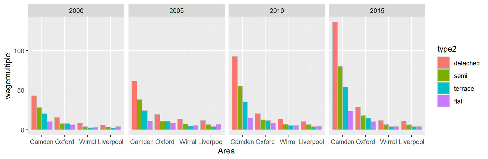
And - because we’re using three different categorical variables, try different combinations of mapping them to fill, facet and x axis. What works best? For example, if we swap year with Area and set a free y scale, we can look at changes within local authorities over time. Though you need to be careful to note that they’re less visually comparable, if a scale is free, ggplot will add individual tick marks for each.
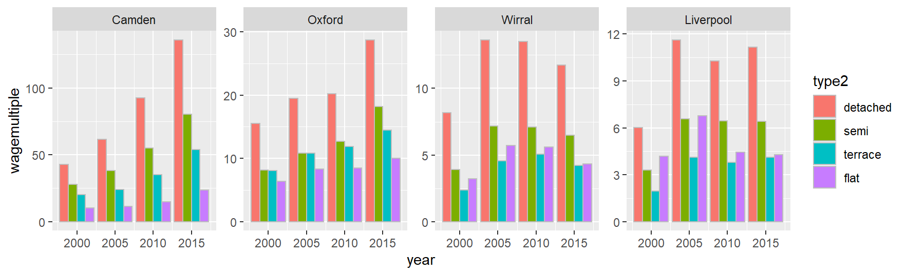
facet_wrap has a range of other options. Also useful is scales. As the link above explains (and as we saw in the autocomplete) this can be scales = ‘free’. Or also ‘free_y’, ‘free_x’ to control them separately. In this case, ‘free_y’ would allow ggplot to adjust each separately to fill the graph (but at the cost of the wage multiple not being as comparable.)
4.3 Iteration
4.4 1. Outputting multiple plots
It’s often useful to be able to look at many different elements of your data in their own separate plots - for example, looking at each city/town or local authority separately. This isn’t often the kind of task you might need for presenting data - but as a way to understand your own data, being able to output many plots easily is really useful.
One option is to use a for-loop to do this. This will allow us to loop over each plot we want and output them separately.
What we’ll do here: cut up the local authorities from the work done in the joining-data section into equal size groups and plot each of the groups.
We can work with the list of local authorities in price_n_wage2018. As usual, the tidyverse supplies a feature for cutting numeric data up in various ways.
If you haven’t still got price_n_wage and price_n_wage2018 in memory from the join section, here’s the price_n_wage dataframe with code for re-grabbing just 2018.
#reload price_n_wage data we previously made
#if it's been over-written with anything or removed
price_n_wage <- readRDS('data/price_n_wage_fromjoinsection.rds')
price_n_wage2018 <- price_n_wage %>%
filter(year == 2018) %>%
arrange(-wagemultiple)So how to cut up the local authority data into equal size groups? Here’s code that does that in two forms: the first is base R, the second uses the pipe operator in dplyr - just to compare legibility between the two.
There’s very useful auto-help for the cut functions: if you just type cut_, this should appear. Each of the three cut functions is explained. cut_number will create a column marking out which rows for wagemultiple are in each group:
#Base R version
price_n_wage2018$groupToPrint <- as.numeric(cut_number(price_n_wage2018$wagemultiple,8))
#dplyr piping version, same result
price_n_wage2018 <- price_n_wage2018 %>%
mutate(groupToPrint = wagemultiple %>%
cut_number(8) %>%
as.numeric
)Note: the cut functions are not cutting according to row - it’s done according to value. That’s why group number one is lowest-value local authorities and eight the highest.
Get a list of the unique values we’re going to iterate over. This could be a vector of character names like place-names - it wouldn’t have to be numeric.
groupsToPrint <- unique(price_n_wage2018$groupToPrint)
groupsToPrint## [1] 8 7 6 5 4 3 2 1Now we’re going to loop over those eight groups and produce a plot for each.
If you’ve not come across for-loops before, they’re straightforward. Translated to English, for-loops are just: ‘for each of this set of values (in our case, it’ll be our eight groups), carry out this bunch of tasks, once per value’.
That vector can now be used in the for loop. Set up the for loop first just to see what it’s doing:
for(grp in groupsToPrint){
print(grp)
}The for-loop assigns each value from groupsToPrint to the grp variable in turn. It then executes the code between the curly braces. In this case, we’re just printing the grp number - but the principle is the same for whatever code we put between them. We just need to replace print(grp) with our code.
The first job for the loop: pull out the list of local authorities to print on each iteration. We filter by group and then pull out the single vector of local authorities in the Area variable (we also use print here so the result is visible in the for loop):
for(grp in groupsToPrint){
#get vector of zones to draw
zoneselection <- price_n_wage2018 %>%
filter(groupToPrint == grp) %>%
pull(Area)
print(zoneselection)
}A couple of things before starting:
We’ll add our plots to a sub-folder in the images folder. Make that now with RStudio’s ‘new folder’ option in the file tab, inside the images folder: something like groupsOfLocalAuthorities.
It’s tricky trying to debug code that’s running inside a for loop. A useful thing to do is: pick one value to assign to grp so that we can then run the code by highlighting, without having to run the whole for loop. For example:
grp <- 1When we run the actual for loop, it will overwrite this with the value it assigns. But we can work with it while getting the code right.
There’s nothing much new in the code below: this is just our previous wage multiple plot code, working on each group in turn. The only other thing to note:
At the bottom, we’re making a filename that includes the first and last local authority names in the group (as well as the group name). This is done with the paste0 function. Paste0 just takes in a bunch of bits of text and variables, separated by commas, and turns them into one character. This allows us to save each group as its own file.
There is also an added geom_point showing the median wage itself.
for(grp in groupsToPrint){
print(paste0('outputting group ',grp))
#get vector of zones to draw
zoneselection <- price_n_wage2018 %>%
filter(groupToPrint == grp) %>%
pull(Area)
output <- ggplot(price_n_wage %>% filter(Area %in% zoneselection),
aes(x = year, y = wagemultiple, colour = fct_reorder(Area,-wagemultiple))) +
geom_point(aes(size = medianwage), alpha = 0.2) +
scale_size_continuous(range = c(0,10)) +
geom_line(size = 0.75) +
labs(colour = 'area')
#save the plot
#text of zones
zonetext <- paste0(zoneselection[1],'_to_',zoneselection[length(zoneselection)])
filename <- paste0('images/groupsOfLocalAuthorities/group_',grp,'_',zonetext,'.png')
ggsave(filename, output, dpi = 300, width = 9, height = 5)
}4.4.1 2. Pulling out multiple model values and visualising them
This section is inspired by code from the excellent book R for Data Science and the section on mapping with the purrr library (another one that comes packaged with the tidyverse library).
Academic papers are still full of endless regression tables. They are not very aesthetically pleasing. Another option is to visualise your model’s findings in some way.
This section gives an example - it has little statistical merit but illustrates the basic idea:
If you’re running any kind of model on multiple subsets of data, how can you pull out the results of interest and visualise them? How do you also show error?
ggplot has a number of geometries specifically for showing ranges - as well as showing error, these can be used for e.g. showing mins and maxes. You must set the values for these yourself
The basic principle here is simple: pull out all of the results you want into a dataframe, then apply your dplyr and ggplot knowledge to visualise it and create error values
We’d expect employment and house prices to have a positive relationship but what’s the magnitude of the relationship, how much does it vary between places and has it changed over time?
To look at this, we’ll combine house price data with employment data so that we have these in their own columns:
- Average house price per ward for a range of TTWAs, for 2001 and 2011
- Percent of employed people in those wards for 2001 and 2011
We’ll look at the same house price data, but this version is subsetted to:
2001 and 2011 so we can compare to employment data from the Censuses in those years. Only TTWAs that have wards with 30 or more sales in each time period.
If you like, there’s the option of skipping ahead a few steps and just loading the pre-prepared data for the regressions. Otherwise, let’s start by loading another subset of the sales data:
sales <- readRDS('data/sales2001and2011wardsWithMoreThan30sales.rds')
#Note it's already got year in
names(sales)## [1] "price" "date" "postcode"
## [4] "type" "Eastings" "Northings"
## [7] "wardcode" "ttwa" "ttwa_code"
## [10] "localauthority" "localauthoritycode" "year"And this is the employment data: the columns 2001 and 2011 contain the percent of economically active people in employment in that ward.
employment <- read_csv('data/percentEmployedByWard2001n2011.csv')Now, as before, the job is just to:
- summarise the housing data: average price per ward and per year - with the added detail that we want to keep the TTWA name these wards are in.
- Join this summary with the employment data, linking on year and ward.
Notice the trick used in summarise here to keep the TTWA name in the summary: using max(ttwa). What does this do? In short: it’s a way of easily grabbing a column we want in our summary, if we know there’s a single value per group. (The sales dataframe has already had its wards set to only be in one TTWA.)
#Average price per ward per year
priceSummary <- sales %>%
group_by(year,wardcode) %>%
summarise(meanprice = mean(price), count =n(), ttwa =max(ttwa))## `summarise()` has grouped output by 'year'. You can override using the `.groups` argument.#p.s. if we wanted to find the modal ttwa, we could use this.
#ttwa = names(which.max(table(ttwa))As the employment data has one column for each year, this has to be made into long-form. The two can then be joined using inner_join again to keep only wards common to both:
empLong <- employment %>%
gather(key = year, value = percentEmployed, `2001`:`2011`) %>%
mutate(year = as.numeric(year))
avpriceplusemp <- inner_join(priceSummary,empLong,
by = c('year','wardcode'))
#count of wards per ttwa / year
table(avpriceplusemp$ttwa, avpriceplusemp$year)##
## 2001 2011
## Blackburn 50 50
## Bradford 32 32
## Brighton 54 54
## Cambridge 67 67
## Doncaster 21 21
## Hull 61 61
## London 926 926
## Middlesbrough & Stockton 71 71
## Oxford 66 66
## Poole 24 24Here’s the pre-prepared and joined price and employment data, if you skipped the last chunk:
avpriceplusemp <- readRDS('data/avpriceplusemp.rds')So: the aim is to do a regression of house price on employment for each TTWA, using its wards as data points. Before attempting multiple regressions, though, let’s work through a single regression to see what needs to happen.
We’ll be using log of house price as the dependent variable and using this to tell us about percentage change. And we’ll even use R’s base plotting function to quickly look at it.
#test a single regression, look at plot.
#Pull out a single year and TTWA
testinz <- avpriceplusemp %>% filter(year == 2001, ttwa == 'Bradford')
#run the regression and look at a summary - log of house price as
rez <- lm(data = testinz, formula = log(meanprice) ~ percentEmployed)
summary(rez)##
## Call:
## lm(formula = log(meanprice) ~ percentEmployed, data = testinz)
##
## Residuals:
## Min 1Q Median 3Q Max
## -0.27890 -0.16621 0.02439 0.13770 0.31521
##
## Coefficients:
## Estimate Std. Error t value Pr(>|t|)
## (Intercept) 4.804860 0.760030 6.322 5.69e-07 ***
## percentEmployed 0.066004 0.008179 8.070 5.22e-09 ***
## ---
## Signif. codes: 0 '***' 0.001 '**' 0.01 '*' 0.05 '.' 0.1 ' ' 1
##
## Residual standard error: 0.1921 on 30 degrees of freedom
## Multiple R-squared: 0.6846, Adjusted R-squared: 0.6741
## F-statistic: 65.13 on 1 and 30 DF, p-value: 5.223e-09#Look at the data and the estimated regression line
plot(log(testinz$meanprice) ~ testinz$percentEmployed)
abline(rez)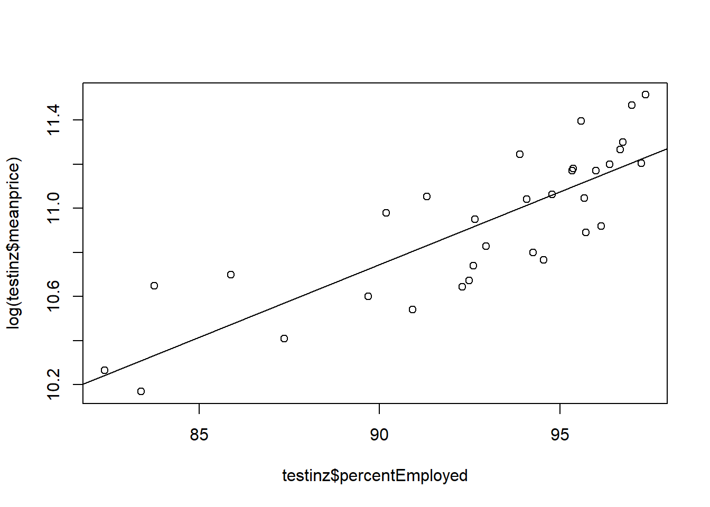
In Bradford in 2001, an employment increase of 1% was associated with a house price increase of about 6.6%.
But how to get the coefficients out of the ugly table and into a lovely graph? You’ll have to work this out for whatever model type you use, but for lm it looks like this. Read the comments…
#Get a model summary object
rezsummary <- summary(rez)
#Some things like R-squared are easily accessible...
rezsummary$r.squared## [1] 0.6846464#But we want the slope coefficient and standard error.
#Coefficients are stored in a matrix...
rezsummary$coefficients## Estimate Std. Error t value Pr(>|t|)
## (Intercept) 4.80485956 0.760030304 6.321932 5.690004e-07
## percentEmployed 0.06600402 0.008178535 8.070397 5.223239e-09#... so we just reference using row and column position to get them:
rezsummary$coefficients[2,1] # coefficient for employment ## [1] 0.06600402rezsummary$coefficients[2,2] # standard error## [1] 0.008178535Now we know where to find the coefficients and standard errors all that needs to happen is: find a way to repeatedly run the model for each TTWA.
We’ve already used a for loop to iterate over a process. R has a few other methods for iterating over groups of objects - and again the tidyverse provides a really neat version: the map function from the purrr library.
Since we’ve already used summarise, this is a good way to think about how map works. The notation is lengthy to explain - check the R for data science book if you want to know more. But this allows us to pull out the price means from each TTWA into a variable (of `double’ format, i.e. can have good decimal precision).
Note: split is a base-R function that splits a dataframe into a bunch of dataframes, based on the category passed in. So this is splitting the sales dataframe into smaller ones for each TTWA.
The purrr library should be already loaded as part of the tidyverse library.
x <- sales %>%
split(.$ttwa) %>%
map_dbl(~mean(.$price))
x## Blackburn Bradford Brighton
## 74787.08 78759.26 186405.66
## Cambridge Doncaster Hull
## 189188.19 76228.50 85228.74
## London Middlesbrough & Stockton Oxford
## 277824.28 89690.92 208710.30
## Poole
## 189531.80The notation used makes it very easy to create tidy iterations. And here, we can break down the process of running many models and pulling out the numbers of interest using exactly the same approach we just used to get those means. First, running a linear model on each TTWA for 2001. Note we combine map with the dplyr filter verb.
models <- avpriceplusemp %>%
filter(year == 2001) %>%
split(.$ttwa) %>%
map(~lm(log(meanprice) ~ percentEmployed, data = .))And to check we can now use those models to access the coefficients in the way we previously worked out:
models %>%
map(summary) %>%
map_dbl(~.$coefficients[2,1])## Blackburn Bradford Brighton
## 0.11050658 0.06600402 0.02570804
## Cambridge Doncaster Hull
## 0.09532273 0.12828774 0.08965422
## London Middlesbrough & Stockton Oxford
## 0.03491091 0.07675510 0.06060024
## Poole
## 0.10562224Tick! Great. Now what? Well, we can use this repeatedly to directly create a dataframe. So using the check code we just tested and two others, the following code does this:
- Creates a dataframe of coefficients and standard errors (and pulls out the TTWA names in the process)
- Uses mutate to multiply the coefficients by 100 to give percentages
- Then uses mutate again to create a 95% confidence interval using the standard error
alloutput <- data.frame(
names = models %>%
map(summary) %>%
map_dbl(~.$coefficients[2,1]) %>% names,
coeffs = models %>%
map(summary) %>%
map_dbl(~.$coefficients[2,1]),
se = models %>%
map(summary) %>%
map_dbl(~.$coefficients[2,2])
)
#Multiply by 100
alloutput <- alloutput %>%
mutate(
coeffs = coeffs * 100,
se = se * 100
)
#add in some min/max confidence intervals from standard error
alloutput <- alloutput %>%
mutate(
minn = coeffs - (se * 1.96),
maxx = coeffs + (se * 1.96)
)As always, take a look at the resulting dataframe. We’ve got everything we need to plot. But notice the new thing here:
geom_errorbar takes in values for ymin and ymax from the data: these geoms in ggplot are not doing any of their own stats - you need to supply the mins and maxes directly, which is why we calculated them. (This gives us a lot more flexibility about what we want to show.)
ggplot(alloutput, aes(x = fct_reorder(names,-coeffs), y = coeffs)) +
geom_point(size = 5) +
geom_errorbar(aes(ymin = minn, ymax = maxx), width = 0.5) +
coord_flip()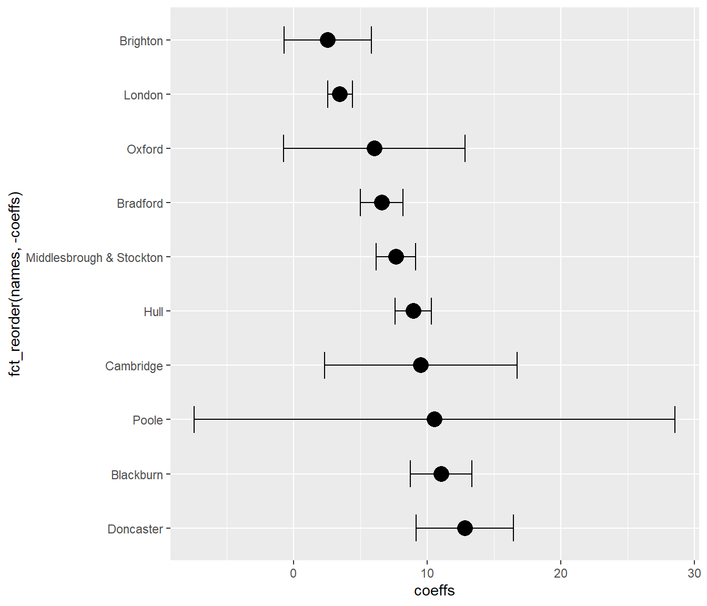
As a last exercise: how would you go about running the models for both decades and then comparing? The aim, as with all ggplots, would be to have year in its own column so it can be mapped to an aesthetic. You could also use dodge.
You could just re-run the code above, changing the year in filter to 2011. But another option is to turn the above code into a function. Doing this provides another way of iterating your code. Some points on functions:
- As we’ve already said, R is a functional language: everything is a function, and they can all be composed together in whatever way produces valid output.
- Functions are just input/output machines: you just need to tell it what goes in and what you want out.
A basic function might look like this. This is obviously a trivial example but the idea applies to anything more complex - the structure of writing one is exactly the same. Say we want to know: is a number divisible by two? (As if this isn’t obvious, but this illustrates the principle!)
isDivisibleByTwo <- function(x){
#Use R's modulus operator %% - gives the remainder from dividing by a number
result <- x %% 2
output <- ifelse(result == 0, TRUE, FALSE)
#We could also do this as the remainder from 2 is only 1 or 0
#and R interprets 1 and 0 as TRUE and FALSE
#return(!as.logical(x))
#By default, an R function will return the last created variable.
#Or you can tell it explicitly what to return like this.
return(output)
}You then need to highlight the whole code block and run it, as usual. Nothing will happen - except you’ll now see the function name in the environment panel.
Once that’s done, your new in-out machine should work:
isDivisibleByTwo(46)## [1] TRUEisDivisibleByTwo(127)## [1] FALSEThe principle of building functions is simple: where possible, put what doesn’t change into a function, pass what does change as arguments to the function. In this simple case, it’s our number we want dividing by two that changes. (Note: the name of the variable is arbitrary: whatever you pass in will be assigned to it.)
So: how would you apply this to the model-running code? Here are some ideas.
- The only thing that changes is the year: it’s either 2001 or 2011. Everything else can be the same as the code used above.
- All of this code could go inside the function:
- The first models <- avpriceplusemp code, where currently year is set to either 2001 or 2011. It’s here we’d use the value passed into the function.
- Then the code creating the alloutput dataframe. This is the thing we want the function to return.
There would also be nothing wrong with adding the extra year column in the function itself - but you would need that for creating a single year column that ggplot can use to map to an aesthetic.
Note: you can view a working version of this function in the file containing all the code, in the project folder, if you want to see how it’s put together to help write your own / cheat!
#Pass a year into the function, then add a column to mark the year.
model01 <- modelz(2001) %>% mutate(year = 2001)
model11 <- modelz(2011) %>% mutate(year = 2011)
#Both will be the same structure - combine the rows from both
bothmodels <- rbind(model01,model11)And with the addition of position = ‘dodge’ in geom_errorbar, this could be used to create the following. Note here we’re setting dodge spacing directly so we can control the point and error bar position to both match each other:
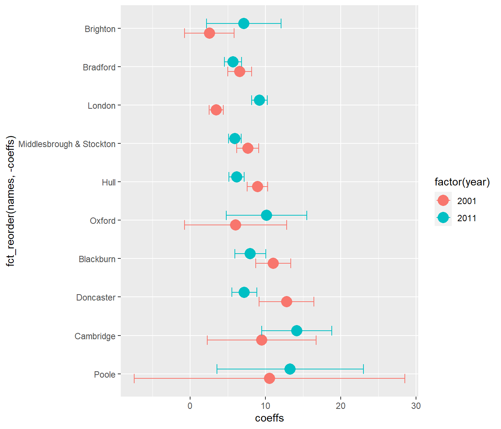
Again, the R for Data Science book has a lot more on functional programming - hopefully this gives a hint of its power.
4.5 A little bit of mapping
In this section, we’ll take a quick look at three different ways to make maps from the housing data:
- The first two use ggplot again, to show two very simple ways it can be used to view geographical data. ggplot can do a lot more, but this is a start.
- Then we’ll introduce a couple of new libraries: the simple features (sf) library and tmap for making maps.
The sf library is relatively new: it’s particularly great because it works excellently with all the *dplyr data wrangling skills you’ve already learned. We’ll run through an example of doing that.
4.5.1 One simple way to use ggplot for mapping: the 2D geoms
A really simple way to make quick maps is to use ggplot’s 2D geoms. One of these included on the ggplot cheatsheet - geom_bin2d - does a single job: as the help says, if you have two dimensions of continuous data, it:
divides the plane into rectangles, counts the number of cases in each rectangle, and then (by default) maps the number of cases to the rectangle’s fill.
We have exact postcode locations for each sale: these can be our two dimensions. So in practice that means we can easily make a map using this geom that counts how many sales there are in each rectangle. First, let’s re-load the sales data (adding the year column back in) and subset to London:
sales <- readRDS('data/landRegistryPricePaidTopTTWAs.rds')
sales$year <- year(sales$date)
london <- sales %>% filter(ttwa=='London')Then try the new geom, subsetting to a single year:
ggplot(london %>% filter(year == 2018), aes(x = Eastings, y = Northings)) +
geom_bin2d()A map! It could with a few little extras. The next version shows that you can:
- Control the number of bins by defining their dimensions. This geographical data is in British National Grid projection: Easting and Northing units are in metres. So we can make a map with 1km square grid by setting bin width to 1000. As with geom_bar and other bin stats, this is set in the geom itself.
- Pick a colour scale, as we’ve done before - but with one difference: use distiller. This is for continuous variables: it distills continuous values from color brewer’s discrete scales. (You can also add trans = ‘log’ into this function if you want a log fill scale showing the correct values.)
- coord_fixed does what the name suggests: the x and y axis are fixed relative to each other. It’s also possible to set a ratio for the two of them - check the help file.
- theme_void() drops almost all extras from the graph, just leaving the data itself and the guide/legend.
ggplot(london %>% filter(year == 2018), aes(x = Eastings, y = Northings)) +
geom_bin2d(binwidth = c(1000,1000)) +
scale_fill_distiller(palette = 'Spectral') +
coord_fixed() +
theme_void()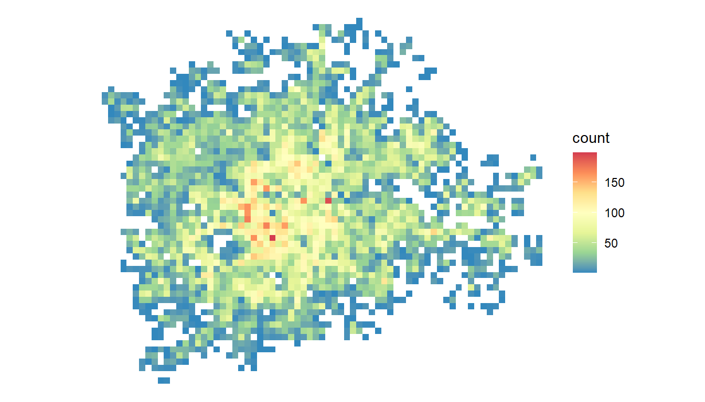
But what about things other than count?
What if we want to, say, find the median sale value per square? ggplot has a stat for that - though it’s not listed on the cheatsheet: stat_summary_2d. This gives us total control over what goes into each square. The only extra thing we need to do here:
Provide a z value: this will be the column used in the grid square statistic. So we’ll use price.
stat_summary_2d’s default is to give you the mean, but we can provide any function we like. So here’s the median (and we’re including all the other extras we added to the last one). Note, we’ve only changed three things: the geom used, and adding ‘z = price’ into the aesthetic. We’ve also done as mentioned above: told the fill scale we want a log transformation:
ggplot(london %>% filter(year == 2018), aes(x = Eastings, y = Northings, z = price)) +
stat_summary_2d(fun = median, binwidth = c(1000,1000)) +
scale_fill_distiller(palette = 'Spectral', trans = 'log') +
coord_fixed() +
theme_void()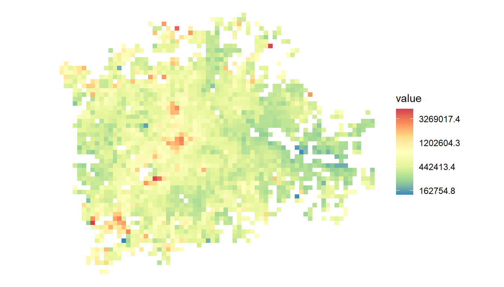
Try finding the minimum and maximum property value per square (using the min and max functions). This reveals something interesting about the difference in property types in the centre versus the outskirts.
You have a couple of options now: you can skip ahead to the next section if you want to do some proper mapping with actual map data, get to use the simple features package and learn how to wrangle spatial data.
Or the last part of this section just shows quickly how to use the map function from the purrr library (also used in the ‘pulling out multiple values’ section) to get around a problem with using facet (see the facet section).
4.5.2 Using cowplot to get around the facetting problem
As the section above on facetting shows, ggplot can be used to ‘facet’ produce many sub-plots based on a factor, like property type. However, facets all keep the same colour scale. This can be a problem if e.g. the count of flats and detached houses is very different: each individual map will have its scale compressed and look flat and boring.
One workaround: create a number of individual plots and then combine them. We can do this with the cowplot library. As always, use install.packages if this isn’t already installed.
library(cowplot)This library can be used to very neatly arrange multiple ggplots.
So let’s aim to make a single plot showing the count of each different property type. We can start with the same code we just wrote for getting a count of properties per grid square, except subset to single property types:
flats <- london %>% filter(type == 'F')
flatplot <- ggplot(flats %>% filter(year == 2018), aes(x = Eastings, y = Northings)) +
geom_bin2d(binwidth = c(1000,1000)) +
scale_fill_distiller(palette = 'Spectral') +
coord_fixed() +
theme_void()
flatplot
terraces <- london %>% filter(type == 'T')
terraceplot <- ggplot(terraces %>% filter(year == 2018), aes(x = Eastings, y = Northings)) +
geom_bin2d(binwidth = c(1000,1000)) +
scale_fill_distiller(palette = 'Spectral') +
coord_fixed() +
theme_void()
terraceplotWe can see how cowplot works now just with these two. We can combine multiple plots just by supplying them to plot_grid:
plot_grid(flatplot,terraceplot)But how to avoid having to manually create each plot? There are several options, but here’s a neat one using purrr. All this does:
Uses base R’s split function to split the dataframe into each house type Passes each subgroup to the map function. Note, this is exactly the same ggplot code we just used (except we’re filtering to 2018 in the first line). The only other difference: we’ve replaced the dataframe name with the dot operator. The dot stands in for each of the smaller dataframes that map passes in. Note also the tilde (~): that’s just shorthand for passing into a function.
plots <- london %>%
filter(year == 2018) %>%
split(.$type) %>%
map(
~ggplot(., aes(x = Eastings, y = Northings)) +
geom_bin2d(binwidth = c(1000,1000)) +
scale_fill_distiller(palette = 'Spectral') +
coord_fixed() +
theme_void()
)All that’s done is map each of the plots we were previously doing manually to a list. We could view any of them by looking at the list directly. For example, here’s the first:
plots[[1]]Now that whole list can just be passed directly into cowplot’s plot_grid. (We’re also now telling cowplot the number of rows and columns we want):
plot_grid(plotlist = plots, ncol = 2, nrow = 2)OK, looking good. There are a couple of things it would be nice to do now. See if you can work out how. Some hints:
- We need to label each house type. Using info from the ‘prettifying’ section, can you use ggtitle to add that in? Hint: use the ‘max’ trick, also used in the ‘pulling out multiple model values’ section to get a single value from the type column. There will only be e.g. a single ‘F’ repeated in the flats sub-dataframe, so you can pull that out be e.g. doing this. You just need to use the dot operator instead.
max(flats$type)- Coordinates for each plot are currently different, because ggplot adjusts each to its min and max range. We could do with setting them to be the same. Hint: in the prettifying section, we used coord_cartesian and set the plots xlim values. We can set them here directly in coord_fixed. The limits we’re after are just the minimum and maximum for both eastings and northings. These could be dropped directly into the right place in coord_fixed…
range(london$Eastings)
range(london$Northings)The result should look something like this:
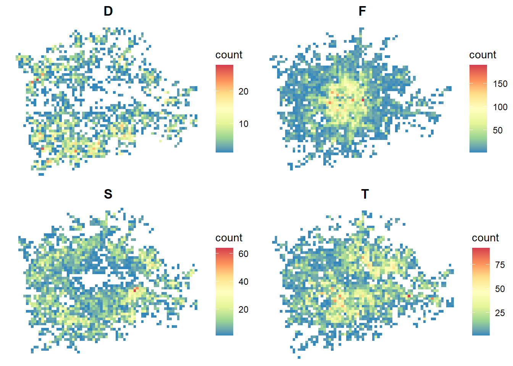
4.6 Making a map using the simple features library, tmap and a bit of wrangling
Another way to map data is the simple features library. As always, if it’s not installed, do so with:
install.packages('sf')And then load it:
library(sf)The sf library has been designed from the ground up to work with the tidyverse - so any kind of wrangling you’ve already learned can be used here too.
If you want to learn more, take a look at the excellent free online book Geocomputation with R by Robin Lovelace, Jakub Nowosad and Jannes Muenchow. We’ll just be making a map here, but sf, combined with the tidyverse, is a powerful spatial analysis and manipulation tool.
We’ll start by loading some map data - London wards. All we’ll then do is make a map of the average house price per ward.
#Note it appears as a standard dataframe. But look, geometries!
londonwards <- st_read('data/mapdata/londonwards.shp')## Reading layer `londonwards' from data source `C:\Users\admin\Dropbox\Training\R_PrinciplesOfViz_and_Datawrangling_2021\data\mapdata\londonwards.shp' using driver `ESRI Shapefile'
## Simple feature collection with 962 features and 1 field
## Geometry type: MULTIPOLYGON
## Dimension: XY
## Bounding box: xmin: 501183 ymin: 149641 xmax: 576444 ymax: 208030
## Projected CRS: Transverse_MercatorTake a quick look at the loaded spatial data. You can just use plot(londonwards) but that gives one map per column by default. To just check it’s looking correct, you can use:
plot(st_geometry(londonwards))Let’s also reload the house sales data just for those London wards:
#Use London-only ward subset:
sales <- readRDS('data/landRegistryPricePaid_LondonWards.rds')
#Add year column back in
sales$year <- year(sales$date)The plan is to link these two - it’s always a good idea to make sure the link columns are behaving and there are no bad links. A good way to do this is just to table up a question: are the london wardcodes present in the sales wardcodes?
#Check there's a good link between the mapping and housing data. Tick.
table(londonwards$wardcode %in% sales$wardcode)##
## TRUE
## 962All true - so yes, it’s fine, we’ll be able to successfully link the mapping and housing data on that column.
Now, we’ll just do as we’ve previously done: find a summary of the housing data per geographical zone, ward in this case. And filter down to a single year:
#Summarise
salesSummary <- sales %>%
filter(year==2018) %>%
group_by(wardcode) %>%
summarise(meanprice = (mean(price)/1000) %>% as.integer(), count = n())So now that gives us single wards in each row (check by looking via the environment panel), each one summarised with a mean and count of sale number.
We can now link this summary to our mapping data using the same dplyr join functions we’ve already used. But note, there’s little wrinkle here. Let’s run this twice, but with the dataframes in a different order:
london1 <- inner_join(salesSummary, londonwards, by = 'wardcode')
london2 <- inner_join(londonwards, salesSummary, by = 'wardcode')
class(london1)## [1] "tbl_df" "tbl" "data.frame"class(london2)#Only this one is spatial## [1] "sf" "data.frame"Both dataframes look the same if viewed but, if we check the class, only the second has “sf” as its first class. The lesson: if you’re joining spatial sf data and want to keep the spatial part, put it first in a join. There are ways around that but this is the easiest way.
We’re now ready to make a map. This will require a new library: tmap. As always, install first if it’s not already installed, and then load:
library(tmap)And then we can jump straight into making a map. All we do is supply the column value we want to plot in tm_polygons:
tm_shape(london2) +
tm_polygons("meanprice")A map! But it needs a few extras. First-up, you may want to pick a better colour scheme. As with color brewer, there’s a function for looking at all the options:
tmaptools::palette_explorer()There are a few other tweaks added here as well - the tmap help files explain the vast number of others available to you. That includes a great getting started page.
Here, we make these additions:
- Set the style to ‘jenks’: this makes for a better visual spread of values.
- Set the number of legend categories with n to get a nicer spread.
- Set the palette, having picked one from the palette explorer. (Just put a minus before the palette name to reverse its order.)
- Reduce the border alpha so it doesn’t block the polygons as much. (See the ‘prettifying’ section for more on alpha values: 0 is totally transparent; 1 is opaque.)
- Move the legend outside of the main map box. This is a quick way to make sure legends don’t clash with the map. See the ?tm_layout help for a load more legend positioning options.
tm <- tm_shape(london2) +
tm_polygons("meanprice", style = 'jenks', n = 10, palette = 'viridis', border.alpha = 0.3) +
tm_layout(
legend.outside = T,
legend.position = c(0.05,'center')
)
tmAnd because we’ve assigned the map to a variable, we can also save it:
tmap_save(tm, filename = "images/londonhouseprices_ward2018.png")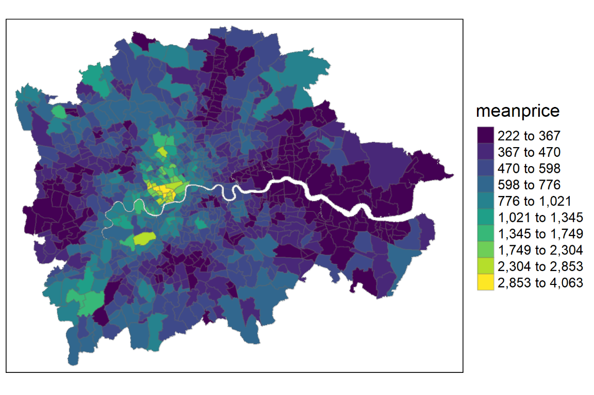
4.6.1 A last little ggplot mapping example
We’ve already seen at the start, if you have point coordinates you can map these to the x and y axes to get an idea of the geography of your data.
Here, we just combine this idea with dplyr’s summary ability to ask:
What’s the most common type of house in each postcode in London?
To do this, we’ll apply a simple function that finds the modal property type. The general principle here is: you can use any function in summarise.
So it’s the same sales data, containing the London TTWA. And we reduce it to London:
sales <- readRDS('data/landRegistryPricePaidTopTTWAs.rds')
london <- sales %>% filter(ttwa == 'London')Then it’s good old dplyr again for finding the mode. Note we can use max here as the data has been grouped by postcode - we only have one location value per postcode, so the max is correct.
cityModalTypes <- london %>%
group_by(postcode) %>%
summarise(mode = names(which.max(table(type))),
Eastings = max(Eastings),
Northings = max(Northings)) To see how the mode is found, take some time to break down the full list of functions and check the help files too:
table(city$type)
which.max(table(city$type))
names(which.max(table(city$type)))As in the facetting section, we can also recode the property type to something more sensible:
cityModalTypes <- cityModalTypes %>%
mutate(mode2 = fct_recode(mode,
'flat' = 'F',
'terrace' = 'T',
'semi' = 'S',
'detached' = 'D'
)) %>%
mutate(mode2 = fct_relevel(mode2,
'flat',
'terrace',
'semi',
'detached'
)) And then plot! A couple of extras here to notice:
- We set the shape by number: the ggplot cheatsheet has a little guide to the available shape codes.
- the guides function is used to make the categories more clear - otherwise it defaults to the displayed size which, in this case, would be tiny.
- labs is used to remove the legend title - it’s clear enough from the labels what it refers to.
Now it just needs some less hideous colours…
ggplot(cityModalTypes,aes(x = Eastings,y = Northings, colour = mode2)) +
geom_point(shape = 15, size = 0.25) +
scale_color_brewer(palette = 'Set1', direction = -1) +
#https://stackoverflow.com/questions/20415963/how-to-increase-the-size-of-points-in-legend-of-ggplot2
guides(colour = guide_legend(override.aes = list(size=10))) +
coord_fixed() +
labs(colour = '') +
theme_void()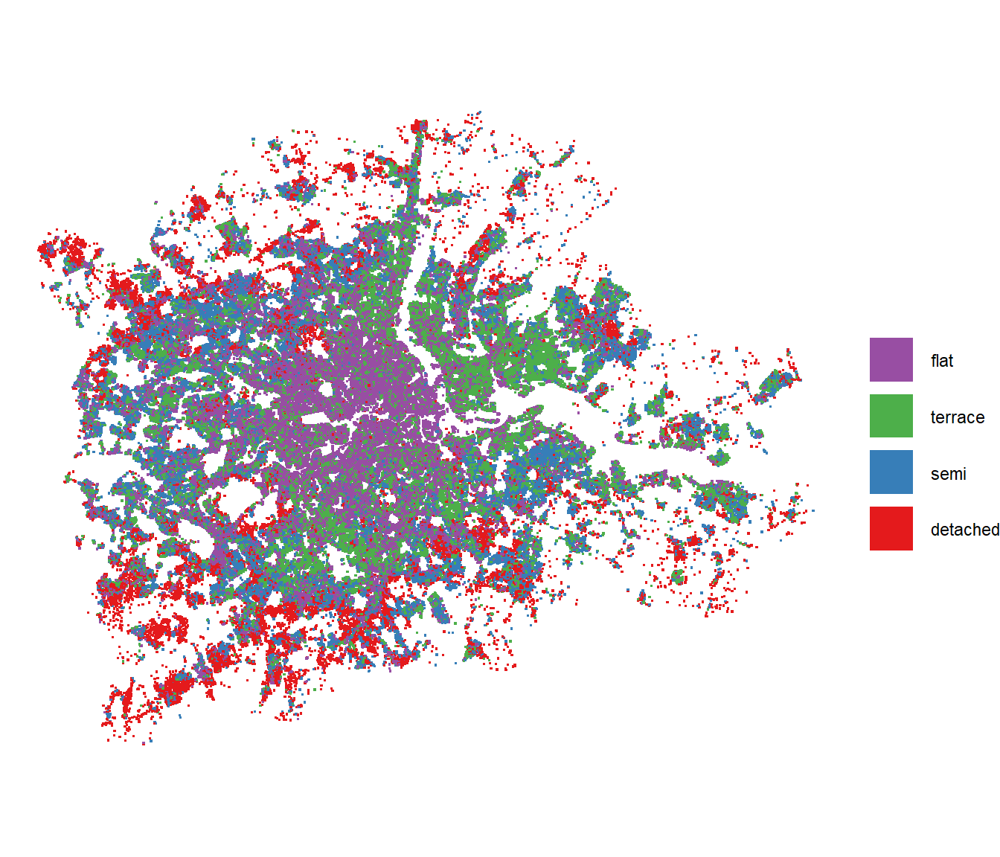